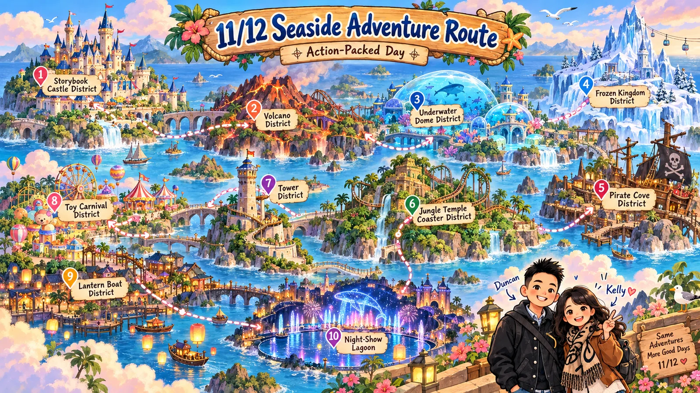
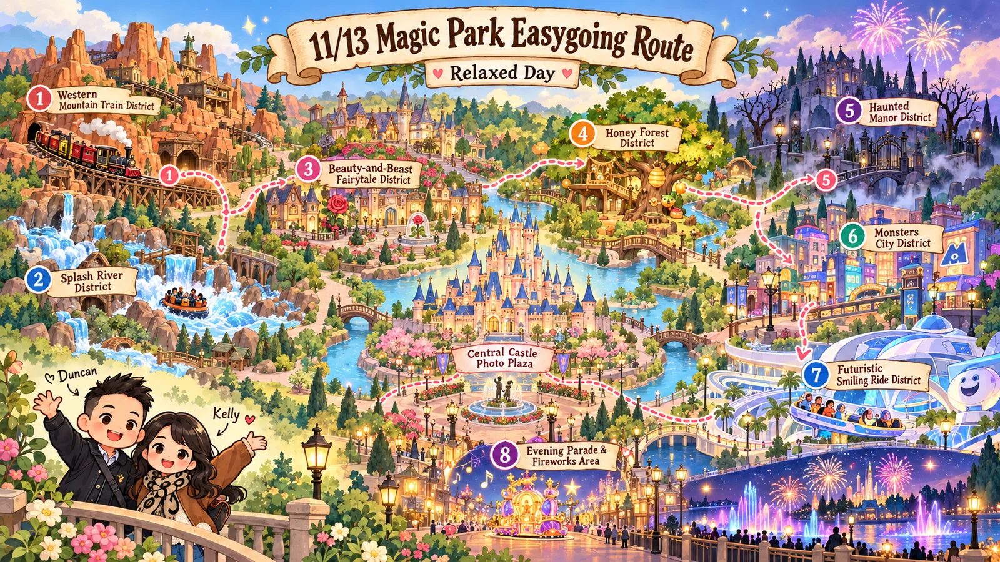

住宿與行李
11/11 東京車站寄放行李、附近逛街，18:00 THE FRONT ROOM 晚餐後前往星野 1955 東京灣入住；11/14 換至東京寶石飯店（Hotel Sardonyx Tokyo，八丁堀 1-13-7）。抵達時若未能入住，先寄放行李。人工寄存請確認領取截止時間。
東京車站 → 迪士尼 → 銀座・麻布台
川越・惠比壽 → 澀谷 → 酒酒井
選一天，看看當天的旅行節奏。
設施打卡、路線調整、DPA 時段，一起收進旅帖。

12 格任務 · 6 項必玩 · 把期待逐格完成
尚未開始冒險
打開海洋棋盤 ↗
11 格任務 · 7 項必玩 · 留一點時間給童話
尚未開始冒險
打開樂園棋盤 ↗打卡與時段儲存在目前瀏覽器；換裝置可匯出／匯入進度。插畫及棋盤為概念示意，實際路線請使用官方園區地圖。
目前安排的四頓訂位晚餐。
訂位狀態與店名依原稿記錄，尚未向餐廳核實。地址、用餐人數及取消規定請核對訂位確認信。
11/11 東京車站寄放行李、附近逛街，18:00 THE FRONT ROOM 晚餐後前往星野 1955 東京灣入住；11/14 換至東京寶石飯店（Hotel Sardonyx Tokyo，八丁堀 1-13-7）。抵達時若未能入住，先寄放行李。人工寄存請確認領取截止時間。
11/11 預定搭 N’EX 28（第 2・3 航廈站 14:23），於櫃檯購票及 Suica。東京站搭京葉線往新浦安，北口轉飯店免費接駁，末班筆記為 23:43。11/14 反向搭至八丁堀換飯店。班次以官方最新時刻表為準。
每日行程以本次確認清單為準：11/16 早午餐為 Parklet Bakery；11/17 安排酒酒井 Outlet 後搭回程航班。去程 11/11 09:30–13:30，回程 11/17 19:30–22:45；航空公司、航班編號與航廈待補。原始 PDF 保留作參考，若與每日行程不同，請以每日行程為準。
此瀏覽器無法儲存，勾選僅在本次開啟期間保留。
東京車站・DisneySea
Disneyland・銀座
川越・惠比壽・澀谷
酒酒井 Outlet